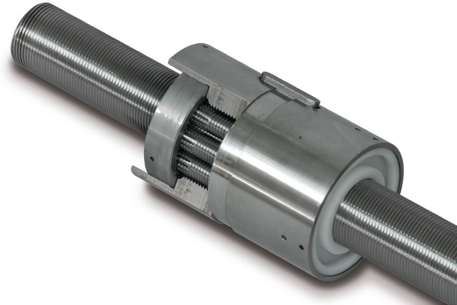
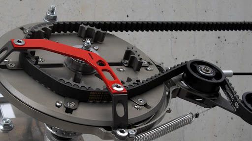

Mechanics
CAO :
Solidworks:
Automatize tasks:
With Task scheduler and scripted macros for solidworks : Link1 - Link2.
Variable driven CAO:
Possibility to drive variables in solidworks with a text file or an excell sheet.
How to realize particular structures :
To generate solidworks files from Eagle PCBs : ref - Github link to ulp file to export IDF board
Blender :
FAO :
Speeds and feeds :
HSM advisor or android app FSWizard - Calculators
Pupitre de commande :
Solidworks:
Extract machineable features (auto)
Editing solidworks cam feed and speeds
Create a chamfer in solidworks CAM
Solidworks marlin postprocessor
Motion :
Drives :
-
Alcubiere motor
-
Harmonic drive
-
Planetary gear drive - (ref)

-
WormGear motoreductor
-
Ballscrefr
-
Planetary roller srews

Pulleys :
Pulleys french dristributor : Tri distribution
Rails Lineraires :
Super tiny cariages 16 / 12 mm RS : https://fr.rs-online.com/web/p/blocs-et-chariots-de-guidage/1766655/ & correspunding rails or 5mm : https://fr.rs-online.com/web/p/guidages-lineaires-rails/9175958/
Linear guides types (non exhaustive)
| Rail type | ||
|---|---|---|
| MGN | 9C / 9H : same rail, same carrier width, different length carrier | |
| EGH | ||
| EGW | ||
| HGW | ||
| HGH |

Bearing tolerances :


Back to back bearing arrangement (type DB) (preload mount)
Face to face (type DF)
Oleksandr Stepanenko : https://grabcad.com/library/6-dof-parallel-robot-1 Modules de déplacement linéaires et robots 6 axes delta
Mechanisms :
Shibata coupler : https://www.reddit.com/r/3Dprinting/comments/kp8bu8/my_attempt_at_designing_and_printing_a_shibata/
Two way screw : https://www.thingiverse.com/thing:4690959
!!! note inline "Hettlage drive: " video - Mechanical variable speed adjustment without multiple pinions & plateaux

- 3 Jaws chuck :
3D model on thingiverse (printable) :
3D printing :
Digital metal : very fine metal details service example video of capabilities
Cura new slice engine (arachne)
Milling :
Conseil Patrick alu : 2017 (eventuelmt rajouter A) aussi appelé AU4G
- Gears :
How to cut gears on CNC mill
How to cut gears with a dividing head
- Plateau diviseur: (ref)
Les plateaux rotatifs sont utilisables en position verticale et horizontale. Le réglage angulaire par s'effectue par vernier gradué ou par disque divisé.

-
Diviseur ( 3 ou 4 mors )
-
Fraises :
- Fraises miniature (finition de haute precision pour "small features")
- Fraises à fileter (ISO 60°) - hélices à 10° - 15° - 27°
- Fraises / barreaux à graver
Turning :
EDM :
BAXEDM on Youtube
Wire EDM : Understanding wire EDM


CryoJet / IceJet is a derivative of the machining process called abrasive waterjet (AWJ) machining.[citation needed] CryoJet/IceJet technology uses ice particles made of water coming from a running water or freshwater system to cut material. While the ice particles are cutting material, they melt and go into the water tank of the machine. The pressurized water acting as a cutting jet can be re-used, with adequate filtering, creating a closed water circuit.[citation needed] However, the majority of users do not re-use the water. If more widely used, CryoJet may produce a drastic reduction in the amount of abrasive waste spill currently produced during the water jet cutting process, as no mineral abrasive is used by this technology.[1]
Materials :
Cobalt chrome used in dental milling - video showing chrome cobalt milling